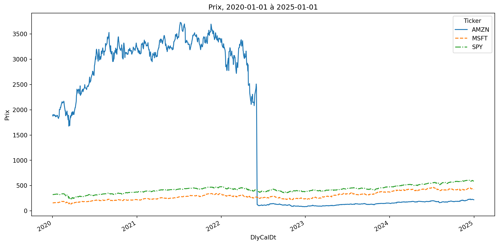
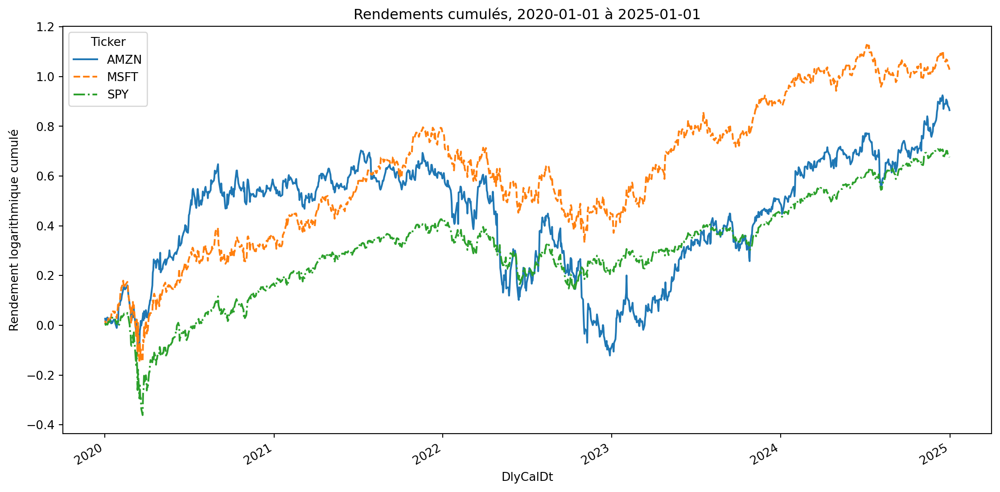
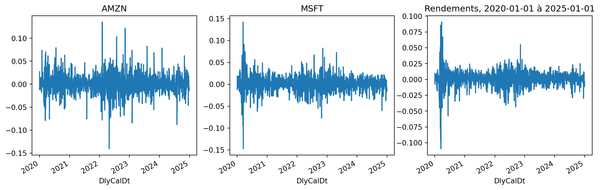
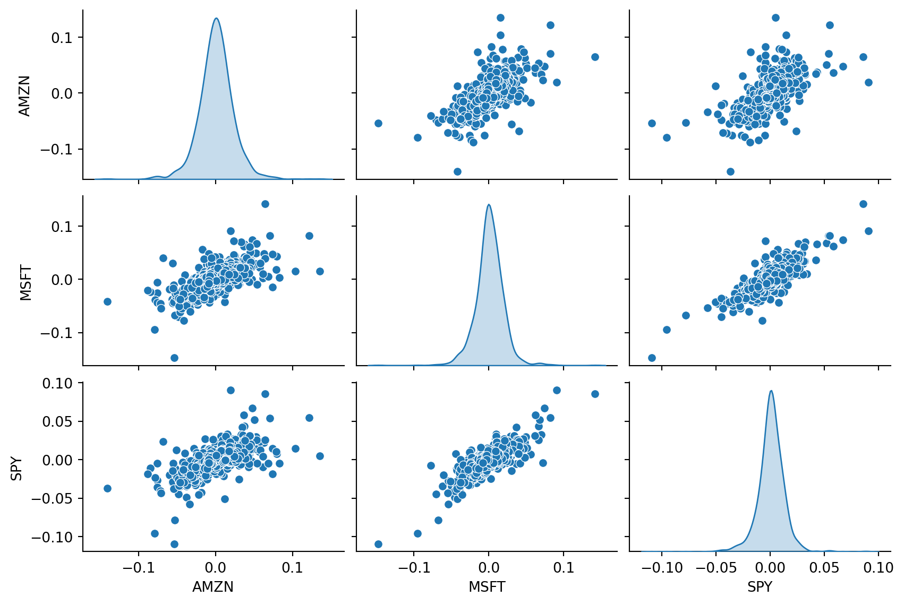
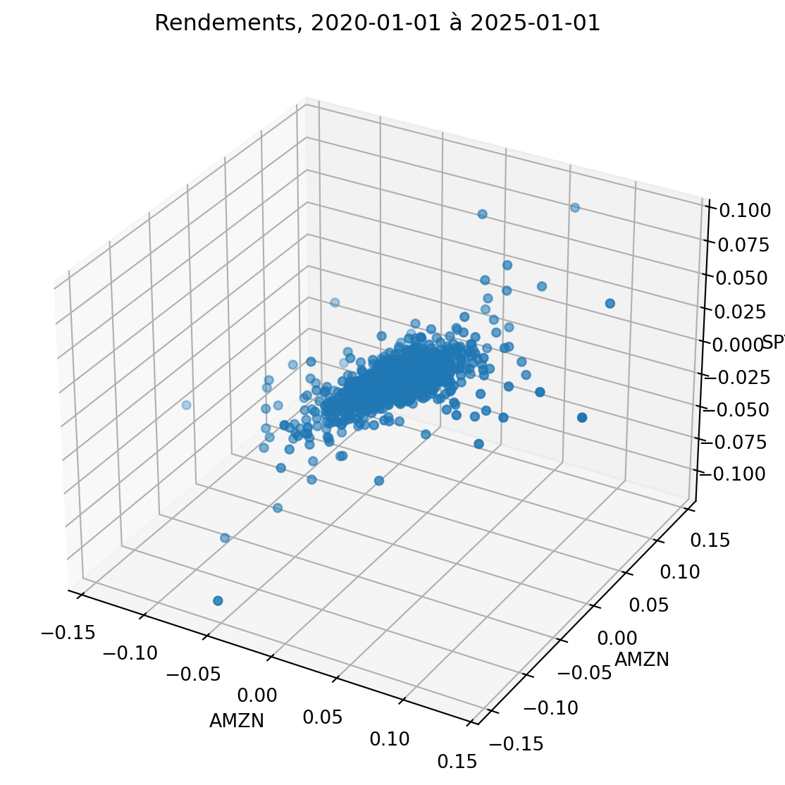

| Exemple d'Anscombe | |||||||
| I | II | III | IV | ||||
|---|---|---|---|---|---|---|---|
| x | y | x | y | x | y | x | y |
| 10.0 | 8.04 | 10.0 | 9.14 | 10.0 | 7.46 | 8.0 | 6.58 |
| 8.0 | 6.95 | 8.0 | 8.14 | 8.0 | 6.77 | 8.0 | 5.76 |
| 13.0 | 7.58 | 13.0 | 8.74 | 13.0 | 12.74 | 8.0 | 7.71 |
| 9.0 | 8.81 | 9.0 | 8.77 | 9.0 | 7.11 | 8.0 | 8.84 |
| 11.0 | 8.33 | 11.0 | 9.26 | 11.0 | 7.81 | 8.0 | 8.47 |
| 14.0 | 9.96 | 14.0 | 8.1 | 14.0 | 8.84 | 8.0 | 7.04 |
| 6.0 | 7.24 | 6.0 | 6.13 | 6.0 | 6.08 | 8.0 | 5.25 |
| 4.0 | 4.26 | 4.0 | 3.1 | 4.0 | 5.39 | 19.0 | 12.5 |
| 12.0 | 10.84 | 12.0 | 9.13 | 12.0 | 8.15 | 8.0 | 5.56 |
| 7.0 | 4.82 | 7.0 | 7.26 | 7.0 | 6.42 | 8.0 | 7.91 |
| 5.0 | 5.68 | 5.0 | 4.74 | 5.0 | 5.73 | 8.0 | 6.89 |
MATH60207 - Séance 5
Plan pour aujourd’hui
- Graphiques et tableaux
- Introduction à matplotlib et seaborn
- Comment lire un article empirique
- Processus de publication en finance
Visualisation de données
Connaissez vos données!
Vos résultats ne sont jamais plus fiables que vos données. Vos données sont-elles fiables?
Si votre ensemble de données est nouveau, les gens veulent se familiariser avec lui.
Cela les aide à juger si vos résultats sont raisonnables, leur donner de nouvelles idées, etc.
Certains ensembles de données sont compliqués. Comment les montrez-vous?
Références
Parfois, les statistiques ne suffisent pas
Statistiques descriptives
| Statistiques Descriptives | ||||
|---|---|---|---|---|
| I | II | III | IV | |
| N. | 11 | 11 | 11 | 11 |
| Moyenne(x) | 9.0 | 9.0 | 9.0 | 9.0 |
| Moyenne(y) | 7.5 | 7.5 | 7.5 | 7.5 |
| OLS | y = 3.00 + 0.50・x | y = 3.00 + 0.50・x | y = 3.00 + 0.50・x | y = 3.00 + 0.50・x |
| 𝜎(𝛽) | 0.118 | 0.118 | 0.118 | 0.118 |
| t-stat 𝛽 | 4.24 | 4.24 | 4.24 | 4.24 |
| 𝜎²(x) | 11.0 | 11.0 | 11.0 | 11.0 |
| 𝜌(x,y) | 0.82 | 0.82 | 0.82 | 0.82 |
| R² | 0.67 | 0.67 | 0.67 | 0.67 |
Figures

Conseils de Tufte (2001)
Un bon graphique devrait
- afficher les données
- amener le lecteur à réfléchir aux données, et non à la méthodologie ou à la conception
- éviter les distorsions qui masquent ce que les données ont à dire
- présenter succinctement de nombreux chiffres
- afficher de grandes quantités d’informations de manière cohérente
- inciter les lecteurs à comparer différentes parties des données
- montrer différents niveaux de détails, de la vue d’ensemble au moindre détail.
- avoir un but précis et raisonnable : description, exploration, tabulation ou décoration
- être une partie cohérente de l’ensemble
Exemple - Probabilités d’augmentation des taux de la Fed

Exemple - Dérive avant l’annonce du FOMC

Impression en noir et blanc ?

Bon Graphiques - GAPMINDER World
L’exemple de Gapminder montre
- Espérance de vie
- PIB par habitant
- Population
- Année
- Continent
C’est une présentation de données en 5D !
- Survolez avec votre curseur et il ajoute le nom du pays (6D!)
Bibliothèques de visualisation Python

Bibliothèques de visualisation Python - Mes favorites
- matplotlib - bibliothèque principale
- seaborn - pour les statistiques, construit sur matplotlib
- pandas - utilise matplotlib
Tableaux de Bord
Pour des tableaux de bord interactifs, vous pouvez utiliser :
Prix

Rendements cumulés

Pièges - Rendements

Rendements : Corrélation et Volatilité

Pièges - 3D

Quel est le graphique le plus approprié pour vos données ?
Voir l’arbre de décision de From data to Viz | Find the graphic you need.
Pièges
Pour une discussion des pièges potentiels avec les graphiques, voir Data to Viz | A collection of graphic pitfalls.
Tableaux
Les mêmes principes s’appliquent également aux tableaux. Facilitez la tâche au lecteur pour voir les données.
Quelques suggestions de John Cochrane (auteur d’un manuel bien connu sur le prix des actifs) :
- Utilisez des unités sensées. Les pourcentages sont bons. Si vous pouvez rapporter un nombre comme 2.3 plutôt que 0.0000023, c’est généralement plus facile à comprendre.
- Utilisez le bon nombre de chiffres significatifs, pas ceux que le programme génère. 4.56783 avec une erreur standard de 0.6789 devrait être 4.6 avec une erreur standard de 0.7. Deux à trois chiffres significatifs suffisent pour presque toutes les applications en économie et finance.
- Aucun nombre ne devrait apparaître dans un tableau qui n’est pas discuté dans le texte. Vous n’avez pas à mentionner chaque nombre séparément ; “La ligne 1 du tableau 3 montre un motif en U” est acceptable. “Le tableau 5 montre les statistiques récapitulatives” (point final) n’est pas acceptable. Si ce n’est pas digne d’être mentionné dans le texte, ce n’est pas digne d’être mis dans le tableau.
Légendes
Chaque figure et tableau devraient avoir une légende avec les informations suivantes :
- Brève description de ce qui est présenté dans le tableau ou la figure.
- Si résultats de régression, au minimum lister la variable dépendante ou indépendante. Si régression compliquée ou régression de panel, ajouter la formule.
- Descriptions des variables (brève description, pas de détails sur la construction des variables).
- Description de l’échantillon (c’est-à-dire période, univers d’actions, etc.)
Chaque légende devrait être autonome, de sorte qu’un lecteur puisse simplement prendre votre rapport et examiner les figures et tableaux sans lire le texte.
Tableaux en Python
Pour les tableaux en Python, vous pouvez utiliser la bibliothèque pandas pour exporter des tableaux vers LaTeX ou Excel.
pandas:df.to_latex(),df.to_excel()pour exporter des tableaux vers LaTeX ou Excel. Les tableaux peuvent être formatés et stylisés avant l’exportation.great_tables- bibliothèque (assez récente) pour créer de jolis tableaux en Python pour la sortie vers HTML ou LaTeX (c’est ce que j’utilise pour les tableaux dans cette présentation).pystout- bibliothèque pour exporter des tableaux de régression vers LaTeX.
Comment lire un article empirique
- Résumé : de quoi s’agit-il ? ai-je vraiment envie de lire ce papier?
- Introduction: résumé de 4 à 10 pages du contenu de l’article, motivation, aperçu des résultats, revue de la littérature
- Données: d’où proviennent leurs données? quelles informations contient-il? Quelle est la taille de leur échantillon? quelles sont les étapes de prétraitement?
- Méthodologie/analyse/résultats : lisez ceci si vous voulez savoir quels tests statistiques ils font, quels sont les résultats réels
Processus de publication en finance
- Idée !
- Première ébauche : publier sur un répertoire de pré-publication (sans évaluation par les pairs) :
- Présenter lors de conférences, séminaires, etc.
- Soumettre pour publication
- Si “chanceux” : Réviser et Resoumettre (multiples tours)
- Sinon, réviser et soumettre à un autre journal
- Article accepté pour publication !
2-3-4 pas nécessairement dans cet ordre
Il peut y avoir de nombreuses années (souvent plus de 2 ou 3) entre (1) et (5).
Revues Académiques
Les meilleures (selon la politique de HEC Montréal) sont les 50 Revues utilisées dans le Classement de Recherche FT
| Finance | Économie | Comptabilité |
|---|---|---|
| Journal of Finance | American Economic Review | Journal of Accounting Research |
| Journal of Financial Economics | Econometrica | Journal of Accounting and Economics |
| Review of Financial Studies | Journal of Political Economy | The Accounting Review |
| Journal of Financial and Quantitative Analysis | Quarterly Journal of Economics | Review of Accounting Studies |
| Review of Finance | Review of Economic Studies | Contemporary Accounting Research |
| Management Science | Accounting, Organizations and Society |
Revues Académiques (2)
Après cela, il existe de nombreuses bonnes revues avec différents objectifs :
- Général : Journal of Banking and Finance, Journal of Empirical Finance, Quarterly Journal of Finance, etc.
- Sujet spécifique : Review of Asset Pricing Studies, Review of Corporate Finance Studies, Journal of Financial Markets, Journal of Financial Econometrics, etc.
- Différents types d’articles : Critical Finance Review, Economic Letters, Journal of Economic Perspective, etc.
- Destinées aux praticiens : Financial Analysts Journal, Risk, etc.
Est-ce une revue frauduleuse ? Vérifiez le Web of Science Master Journal List
Prochain cours
- Revue des statistiques et des probabilités
- Formule de Bayes
- Estimateurs
- Test d’hypothèse classique
- Intervalles de confiance
- Tests de bonne adéquation/QQ plots/Estimateurs de KDE
Références
Anscombe, Francis J. 1973. “Graphs in Statistical Analysis.” The American Statistician 27 (1): 17–21.
Boguth, Oliver, Vincent Grégoire, and Charles Martineau. 2019. “Shaping Expectations and Coordinating Attention: The Unintended Consequences of FOMC Press Conferences.” Journal of Financial and Quantitative Analysis 54 (6): 2327–53.
Cochrane, John H. 2005. “Writing Tips for Ph. D. Students.” https://www.johnhcochrane.com/s/phd_paper_writing-9llk.pdf.
Knaflic, Cole Nussbaumer. 2015. Storytelling with Data: A Data Visualization Guide for Business Professionals. Wiley.
Rougier, Nicolas P. 2021. Scientific Visualization: Python + Matplotlib. Edited by Nicolas P. Rougier. https://inria.hal.science/hal-03427242.
Tufte, Edward R. 2001. The Visual Display of Quantitative Information. 2nd ed. Cheshire, CT: Graphics Press.
Wilke, Claus O. 2019. Fundamentals of Data Visualization: A Primer on Making Informative and Compelling Figures. O’Reilly Media. https://clauswilke.com/dataviz/.

MATH60230
Comment faire un bon graphique